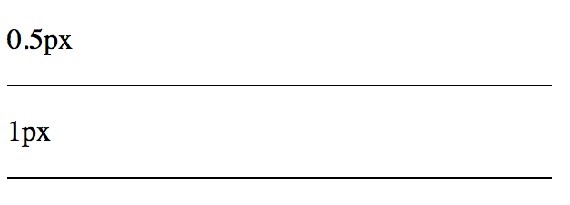

什么是像素？
像素是屏幕显示最小的单位，在一个1080p的屏幕上，它的像素数量是1920 1080，即横边有1920个像素，而竖边为1080个。一个像素就是一个单位色块，是由rgba四个通道混合而成。对于一个1200万像素的相机镜头来说，它有1200万个感光单元，它能输出的最大图片分辨率大约为3000 4000。
那么像素本身有大小吗，一个像素有多大？
有的，如果一个像素越小，那么在同样大小的屏幕上，需要的像素点就越多，像素就越密集，如果一英寸有435个像素，那么它的dpi/ppi就达到了435。Macbook Pro 15寸的分辨率为2880 x 1800，15寸是指屏幕的对角线为15寸（具体为15.4），根据长宽比换算一下得到横边为13寸，所以ppi为2880 / 13 = 220 ppi. 像素越密集即ppi(pixel per inch)越高，那么屏幕看起来就越细腻越高清。
怎么在高清屏上画一条0.5px的边呢？0.5px相当于高清屏物理像素的1px。这样的目的是在高清屏上看起来会更细一点，效果会更好一点，例如更细的分隔线。
理论上px的最小单位是1，但是会有几个特例，高清屏的显示就是一个特例。高清屏确实可以画0.5px，对比效果如下：

猜想方法如下：
1. 直接设置
如果我们直接设置0.5px，在不同的浏览器会有不同的表现，使用如下代码：
<body>
<style>
div{
width: 300px;
background: #000;
}
.half-px {
height: .5px;
}
.one-px {
height: 1px;
}
</style>
<p>0.5px</p>
<div class="half-px"></div>
<p>1px</p>
<div class="one-px"></div>
</body>在PC上的不同浏览器上测试测试结果如下所示：

其中Chrome把0.5px四舍五入变成了1px，而firefox/safari能够画出半个像素的边，并且Chrome会把小于0.5px的当成0，而Firefox会把不小于0.55px当成1px，Safari是把不小于0.75px当成1px，进一步在手机上观察iOS的Chrome会画出0.5px的边，而安卓(5.0)原生浏览器是不行的。所以直接设置0.5px不同浏览器的差异比较大，并且我们看到不同系统的不同浏览器对小数点的px有不同的处理。所以如果我们把单位设置成小数的px包括宽高等，其实不太可靠，因为不同浏览器表现不一样。
2. 缩放scale 0.5
<body>
<style>
div{
width: 300px;
background: #000;
}
.half-px {
height: 1px;
transform: scaleY(.5);
}
.one-px {
height: 1px;
}
</style>
<p>1px + scaleY(.5)</p>
<div class="half-px"></div>
<p>1px</p>
<div class="one-px"></div>
</body>效果图如下：
我们发现Chrome/Safari都变虚了，只有Firefox比较完美看起来是实的而且还很细，效果和直接设置0.5px一样。所以通过transform: scale会导致Chrome变虚了，而粗细几乎没有变化，所以这个效果不好。
我们还想到做移动端的时候还使用了rem做缩放，但实际上rem的缩放最后还是会转化成px，所以和直接使用0.5px的方案是一样的
3. 线性渐变linear-gradient
<body>
<style>
.hr {
width: 300px;
height: 1px;
background-color: #000;
}
.hr.gradient {
height: 1px;
background: linear-gradient(0deg, #fff, #000);
}
</style>
<p>linear-gradient(0deg, #fff, #000)</p>
<div class="hr gradient"></div>
<p>1px</p>
<div class="hr"></div>
</body>linear-gradient(0deg, #fff, #000)的意思是：渐变的角度从下往上，从白色#fff渐变到黑色#000，而且是线性的，在高清屏上，1px的逻辑像素代表的物理（设备）像素有2px，由于是线性渐变，所以第1个px只能是#fff，而剩下的那个像素只能是#000，这样就达到了画一半的目的。逻辑分析很完美，实际的效果又怎么样呢，如下图所示：
我们发现这种方法在各个流览器上面都不完美，效果都是虚的，和完美的0.5px还是有差距。这个效果和scale 0.5的差不多，都是通过虚化线，让人觉得变细了。
4. box-shadow
<body>
<style>
.hr {
width: 300px;
height: 1px;
background-color: #000;
}
.hr.boxShadow {
height: 1px;
background: none;
box-shadow: 0 0.5px 0 #000;
}
</style>
<p>boxShadow</p>
<div class="hr boxShadow"></div>
<p>1px</p>
<div class="hr"></div>
</body>设置box-shadow的第二个参数为0.5px，表示阴影垂直方向的偏移为0.5px，效果如下：
这个方法在Chrome和Firefox都非常完美，但是Safari不支持小于1px的boxshadow，所以完全没显示出来了。不过至少找到了一种方法能够让PC的Chrome显示0.5px。
5. 设置viewport的scale
在移端开发里面一般会把viewport的scale设置成
<meta name="viewport" content="width=device-width,initial-sacle=1">其中width=device-width表示将viewport视窗的宽度调整为设备的宽度，这个宽度通常是指物理上宽度。默认的缩放比例为1，如iphone 6竖屏的宽度为750px，它的dpr=2，用2px表示1px，这样设置之后viewport的宽度就变成375px。这时候0.5px的边就使用我们上面讨论的方法。
但是你可以把scale改成0.5：
<meta name="viewport" content="width=device-width,initial-sacle=0.5">这样的话，viewport的宽度就是原本的750px，所以1个px还是1px，正常画就行，但这样也意味着UI需要按2倍图的出，整体面面的单位都会放大一倍。
在iPhone X和一些安卓手机等dpr = 3的设备上，需要设置scale为0.333333，这个时候就是3倍地画了。
综上讨论了像素和viewport的一些概念，并介绍和比较了在高清屏上画0.5px的几种方法——可以通过直接设置宽高border为0.5px、设置box-shadow的垂直方向的偏移量为0.5px、借助线性渐变linear-gradient、使用transform: scaleY(0.5)的方法